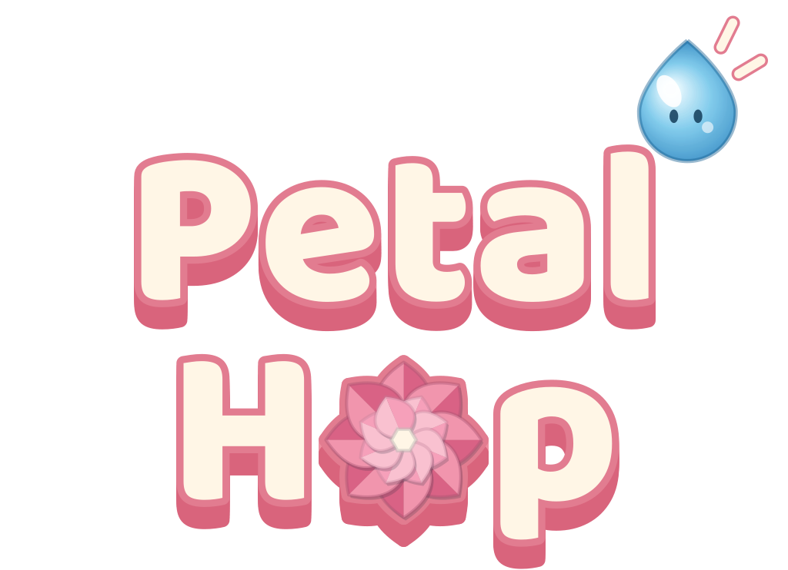

Petal Hop Support
Petal Hop is a calm one-touch jumping game. A water drop hops from leaf to leaf and brings dried-up gardens back to life: press and hold, set the power, release and jump. There are 50 levels across five gardens.
Contact
Write to us with questions, ideas or bug reports. If you can, include your iPhone model and iOS version (Settings → General → About).
gokturkk83@gmail.com
Frequently asked questions
Why was my progress deleted?
Petal Hop keeps your progress and settings only on your own device; there is no account or cloud save. Deleting the app also deletes your progress. Because this information is never sent to us, we cannot restore it.
There is no sound.
If your iPhone is in silent mode, the game may be muted: turn silent mode off and raise the device volume. In the game, check that "Game sounds" and "Music" are switched on in Settings and their volume is above zero. The 🔊 button on the game screen turns both on or off. Sound starts after your first touch.
How do I change the language?
The game starts in your phone's language. To change it, open Settings → Language and pick a language; "Automatic" goes back to your phone's language. The game is available in 12 languages.
The screen zooms in or a magnifier appears.
This is usually the iPhone's own Zoom feature (double-tap with three fingers). Turn it off in the iPhone's Settings → Accessibility → Zoom, or double-tap with three fingers to return to the normal view.
I would like a refund.
Refunds for App Store purchases are handled by Apple. Sign in with your Apple Account at reportaproblem.apple.com, choose the purchase and request a refund; Apple makes the decision.
Privacy
Petal Hop collects no personal data and has no ads or in-app purchases. Details: Privacy Policy.
Petal Hop Destek
Petal Hop tek dokunuşla oynanan sakin bir zıplama oyunudur. Bir su damlası yapraktan yaprağa zıplayarak kurumuş bahçeleri yeniden canlandırır: basılı tutun, gücü ayarlayın, bırakın ve zıplayın. Beş bahçede 50 bölüm vardır.
İletişim
Sorunuz, öneriniz ya da hata bildiriminiz için bize yazın. Mümkünse iPhone modelinizi ve iOS sürümünüzü (Ayarlar → Genel → Hakkında) ekleyin.
gokturkk83@gmail.com
Sık sorulan sorular
İlerlemem neden silindi?
Petal Hop ilerlemenizi ve ayarlarınızı yalnızca kendi cihazınızda saklar; hesap ya da bulut kaydı yoktur. Uygulamayı sildiğinizde ilerlemeniz de silinir. Bu bilgiler bize hiç gönderilmediği için geri getiremeyiz.
Ses gelmiyor.
iPhone sessiz moddaysa oyunun sesi duyulmayabilir: sessiz modu kapatıp cihazın ses düzeyini açın. Oyunda Ayarlar'da "Oyun sesleri" ve "Müzik" anahtarlarının açık, düzeylerinin sıfırdan büyük olduğuna bakın. Oyun ekranındaki 🔊 düğmesi iki sesi birlikte açıp kapatır. Ses ilk dokunuştan sonra başlar.
Dili nasıl değiştiririm?
Oyun telefonunuzun diliyle açılır. Değiştirmek için Ayarlar → Dil'e girip listeden bir dil seçin; "Otomatik" seçeneği yeniden telefonun diline döner. Oyun 12 dilde oynanabilir.
Ekran büyüyor ya da büyüteç çıkıyor.
Bu genellikle iPhone'un kendi yakınlaştırma özelliğidir (üç parmakla çift dokunma). Kapatmak için iPhone'da Ayarlar → Erişilebilirlik → Büyütme'yi kapatın ya da üç parmakla iki kez dokunarak normal görünüme dönün.
İade almak istiyorum.
App Store satın alımlarının iadesini Apple yönetir. reportaproblem.apple.com adresinde Apple hesabınızla oturum açıp satın alımı seçerek iade talep edebilirsiniz; karar Apple'ındır.
Gizlilik
Petal Hop kişisel veri toplamaz, reklam ve uygulama içi satın alma içermez. Ayrıntılar: Gizlilik Politikası.